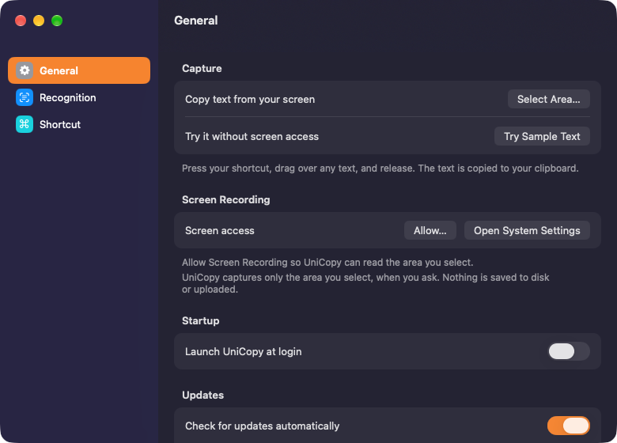
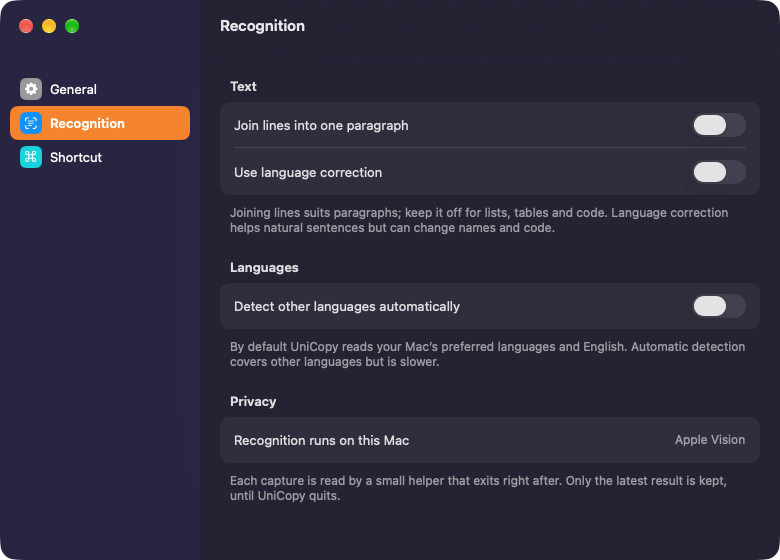
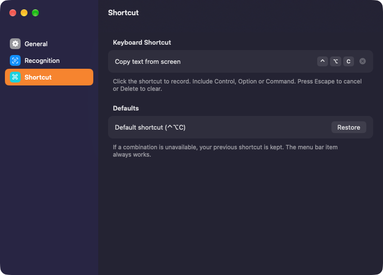

Copy text from anywhere on your screen.
Images, videos, slides, error messages. If you can see it, you can copy it.
Press ⌃⌥C or use the menu bar icon, then drag over any text in the windows above. This demo reads the page’s own text; the app recognises real pixels with Apple Vision.
One shortcut. Then just drag.



Recognised on your Mac. Apple Vision reads the text on-device. Nothing is uploaded, and no screenshot is saved.
Only when you ask. UniCopy captures just the area you select, at the moment you release. No background recording.
Never overwrites newer copies. If you copy something else while it works, your clipboard is kept and the result opens for review.
Good to know
Will it work on my Mac?
UniCopy needs macOS 14 Sonoma or later and runs on Apple silicon and Intel Macs.
Why does it need Screen Recording?
To read the pixels in the area you select. macOS asks for this permission for any app that captures the screen. UniCopy only captures when you drag a selection, and keeps nothing but the latest text, until it quits.
How do I install it?
Unzip the download, move UniCopy to Applications and open it. It isn’t notarized by Apple yet, so the first time, choose Open Anyway in System Settings › Privacy & Security. Then allow UniCopy under Screen Recording in the same pane.
Which languages does it read?
Your Mac’s preferred languages plus English, by default. Turn on automatic detection in Settings for other languages Apple Vision supports. It’s a little slower.
How accurate is it?
Very good on clear text. Small print, code, complex columns or unusual fonts can be misread, so you can edit the result before copying it again. The first capture can take a little longer while macOS prepares its recognition model.
Is it really free?
Yes. No price, no trial and no account. The source code is on GitHub.